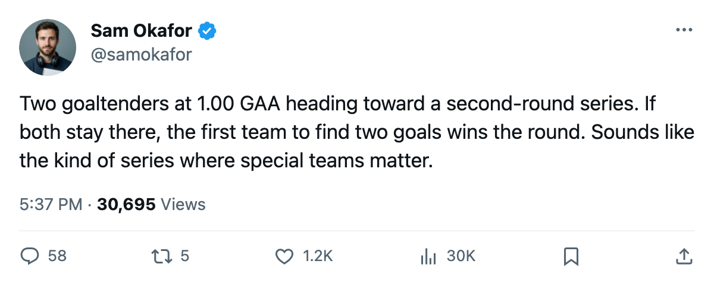

The Road Ahead: a 1.00 GAA, a 38-year-old with 3 points, and whoever survives in D.C.
If Toronto takes Game 3 tonight, the second round begins Thursday or Friday against the winner of Washington-Carolina, which looks like Washington
 Sam OkaforLeafs beat reporter · Queen City Telegram
Sam OkaforLeafs beat reporter · Queen City Telegram
 Washington Capitals leads
Washington Capitals leads  Carolina Hurricanes 2-0 in the other first-round pairing on Toronto's side of the bracket. Game 3 is Wednesday at Raleigh. The Capitals finished 39-26-8, 104 points, 33 clear of the Maple Leafs in the standings but holding a 5-2-0 season-series record over Carolina with a 19-13 goal differential.
Carolina Hurricanes 2-0 in the other first-round pairing on Toronto's side of the bracket. Game 3 is Wednesday at Raleigh. The Capitals finished 39-26-8, 104 points, 33 clear of the Maple Leafs in the standings but holding a 5-2-0 season-series record over Carolina with a 19-13 goal differential.
Through two games, Washington carries 3 points from  Jaromir Jagr91, 2 from Robert Lang, 2 from
Jaromir Jagr91, 2 from Robert Lang, 2 from  Mike Grier82, and 2 from
Mike Grier82, and 2 from  Sergei Gonchar86. In net,
Sergei Gonchar86. In net,  Olaf Kolzig89 has a 1.00 GAA and .952 save percentage across 2 wins. That is the same 1.00 mark Luongo carries for Toronto. Two goalies with 1.00 GAAs in a second-round series means the first team to score two goals likely wins.
Olaf Kolzig89 has a 1.00 GAA and .952 save percentage across 2 wins. That is the same 1.00 mark Luongo carries for Toronto. Two goalies with 1.00 GAAs in a second-round series means the first team to score two goals likely wins.
 Toronto Maple Leafs swept the regular-season series against Washington 3-1-1 with a 1-goal differential of 90 to 46 across all 20 division games, though Carolina and Washington sit in the Southeast, not the Northeast. The season series against Washington specifically does not appear in the divisional record, which covers only the four clubs inside the Northeast. Toronto finished 59-13-5, 133 points, 36 ahead of Washington.
Toronto Maple Leafs swept the regular-season series against Washington 3-1-1 with a 1-goal differential of 90 to 46 across all 20 division games, though Carolina and Washington sit in the Southeast, not the Northeast. The season series against Washington specifically does not appear in the divisional record, which covers only the four clubs inside the Northeast. Toronto finished 59-13-5, 133 points, 36 ahead of Washington.
The matchup takes shape
If Toronto wins tonight and Washington closes Thursday, the second round features two teams that allowed the fewest goals in their respective regular seasons. Toronto allowed 190. Washington allowed 250. The gap between them is 60 goals across 82 games.
The scoring threat in Washington sits with Jagr at 38 years old, carrying 3 assists in 2 playoff games. The Bureau's Development Index does not list him on either the riser or faller tables, which means his overall reads at base. His line with Lang and Grier generated 10 goals and 22 points across 20 games this spring.
For Carolina to force a Game 5, they would need to win three straight. They have not been down 2-0 in any series this season that the record covers.  Kevin Weekes86 carries a .880 save percentage against a 3.00 GAA through two meetings. That number does not improve against this Toronto offense, which scored 99 goals across two playoff games from four different players.
Kevin Weekes86 carries a .880 save percentage against a 3.00 GAA through two meetings. That number does not improve against this Toronto offense, which scored 99 goals across two playoff games from four different players.
The other first-round pairings on the East side:  New Jersey Devils and
New Jersey Devils and  Pittsburgh Penguins are tied 1-1, and
Pittsburgh Penguins are tied 1-1, and  Tampa Bay Lightning and
Tampa Bay Lightning and  Boston Bruins are tied 1-1. If Toronto advances, the second round comes first. The conference final, whoever arrives from those matchups, sits behind that.
Boston Bruins are tied 1-1. If Toronto advances, the second round comes first. The conference final, whoever arrives from those matchups, sits behind that.
